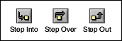
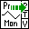
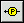
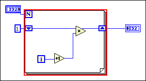
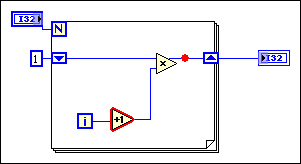
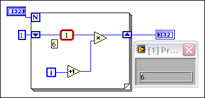
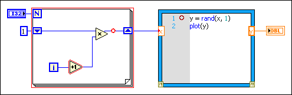

If a VI is not broken, but you get unexpected data, you can use several techniques to identify and correct problems with the VI or the block diagram data flow. If you cannot debug the VI using the following techniques, the VI might have a race condition.
|
Note��To debug a stand-alone application or shared library, start by using these debugging techniques on the block diagram of the startup VI. |
(MathScript RT Module) If the VI contains a MathScript Node, use additional techniques to debug the script.
Most built-in VIs and functions have error in and error out parameters. These parameters detect errors encountered in each node on the block diagram and indicate if and where an error occurred. You also can use these parameters in the VIs you build.
When you wire the error parameters of VIs and functions, the error in and error out clusters provide the following components of information:
Although warnings do not prevent you from running a VI, they can cause unexpected behavior. When you debug a VI, ensure that you display warnings. If the VI causes a warning, use the Error List window to determine the cause and correct the VI.
View an animation of the execution of the block diagram by clicking the Highlight Execution button, shown as follows.
Execution highlighting shows the movement of data on the block diagram from one node to another using bubbles that move along the wires. Use execution highlighting in conjunction with single-stepping to see how data values move from node to node through a VI.
|
Note��Execution highlighting greatly reduces the speed at which the VI runs. If a VI runs more slowly than expected, confirm that you turned off execution highlighting in subVIs. |
If the error out cluster reports an error, the error value appears next to error out with a red border. If no error occurs, OK appears next to error out with a green border.
Single-step through a VI to view each action of the VI on the block diagram as the VI runs. The single-stepping buttons, shown as follows, affect execution only in a VI or subVI in single-step mode.
Enter single-step mode by clicking the Step Into or Step Over button on the block diagram toolbar. Move the cursor over the Step Into, Step Over, or Step Out button to view a tip strip that describes the next step if you click that button. You can single-step through subVIs or run them normally.
When you single-step through a VI, nodes blink to indicate they are ready to execute. If you single-step through a VI with execution highlighting on, an execution glyph, shown as follows, appears on the icons of the subVIs that are currently running.

Use the Probe tool, shown as follows, to check intermediate values on a wire as a VI runs.

Use the Probe tool if you have a complicated block diagram with a series of operations, any one of which might return incorrect data. Use the Probe tool with execution highlighting, single-stepping, and breakpoints to determine if and where data is incorrect. If data is available, the probe immediately updates and displays the data in the Probe Watch Window during execution highlighting, single-stepping, or when you pause at a breakpoint. When execution pauses at a node because of single-stepping or a breakpoint, you also can probe the wire that just executed to see the value that flowed through that wire.
You can check intermediate values on a wire when a VI runs by using a generic probe, by using an indicator on the Controls palette to view the data, by using a supplied probe, by using a customized supplied probe, or by creating a new probe.
Use the generic probe to view the data that passes through a wire. Right-click a wire and select Custom Probe�Generic Probe from the shortcut menu to use the generic probe.
The generic probe displays the data. You cannot configure the generic probe to respond to the data.
LabVIEW displays the generic probe when you right-click a wire and select Probe, unless you already specified a custom or supplied probe for the data type.
You can debug a custom probe similar to a VI. However, a probe cannot probe its own block diagram, nor the block diagram of any of its subVIs. When debugging probes, use the generic probe.
You also can use an indicator to view the data that passes through a wire. For example, if you view numeric data, you can use a chart within the probe to view the data. Right-click a wire, select Custom Probe�Controls from the shortcut menu, and select the indicator you want to use. You also can click the Select a Control icon on the Controls palette and select any custom control or type definition saved on the computer or in a shared directory on a server. LabVIEW treats type definitions as custom controls when you use them to view probed data.
If the data type of the indicator you select does not match the data type of the wire you right-clicked, LabVIEW does not place the indicator on the wire.
Supplied probes are VIs that display comprehensive information about the data that passes through a wire. For example, the VI Refnum Probe returns information about the VI name, the VI path, and the hex value of the reference. You also can use a supplied probe to respond based on the data that flows through the wire. For example, use an Error probe on an error cluster to receive the status, code, source, and description of the error and specify if you want to set a conditional breakpoint if an error or warning occurs.
The supplied probes appear at the top of the Custom Probe shortcut menu. Right-click a wire and select Custom Probe from the shortcut menu to select a supplied probe. Only probes that match the data type of the wire you right-click appear on the shortcut menu.
Use the Create New Probe dialog box to create a probe based on an existing probe or to create a new probe. Right-click a wire and select Custom Probe�New from the shortcut menu to display the Create New Probe dialog box. Create a probe when you want to have more control over how LabVIEW probes the data that flows through a wire. When you create a new probe, the data type of the probe matches the data type of the wire you right-clicked. If you want to edit the probe you created, you must open it from the directory where you saved it.
After you select a probe from the Custom Probe shortcut menu, navigate to it using the Select a Control palette option, or create a new probe using the Create New Probe dialog box, that probe becomes the default probe for that data type, and LabVIEW loads that probe when you right-click a wire and select Probe from the shortcut menu. LabVIEW only loads probes that exactly match the data type of the wire you right-click. That is, a double precision floating-point numeric probe cannot probe a 32-bit unsigned integer wire even though LabVIEW can convert the data.
|
Note��If you want a custom probe to be the default probe for a particular data type, save the probe in the user.lib\_probes\default directory. Do not save probes in the vi.lib\_probes directory because LabVIEW overwrites those files when you upgrade or reinstall. |
(FPGA Module) Use the Sampling probes in host VIs or FPGA VIs to check intermediate values on a wire as a VI runs and to view changes in signal data over time, such as when you need to debug signals from a single-cycle Timed Loop.
When you use a Sampling probe in a host VI, you must first specify a sampling source for the probe. A sampling source determines when LabVIEW reads, or samples, data from associated probes. You can use While Loops, For Loops, or FPGA simulated time as sampling sources depending on whether you use Sampling probes in host VIs or FPGA VIs.
Use the Breakpoint tool, shown as follows, to place a breakpoint on a VI, node, or wire and pause execution at that location.

When you set a breakpoint on a wire, execution pauses after data passes through the wire and the Pause button appears red. Place a breakpoint on the block diagram to pause execution after all nodes on the block diagram execute. The block diagram border appears red and blinks to reflect the placement of a breakpoint.
When a VI pauses at a breakpoint, LabVIEW brings the block diagram to the front and uses a marquee to highlight the node, wire, or line of script that contains the breakpoint. When you move the cursor over an existing breakpoint, the black area of the Breakpoint tool cursor appears white.
When you reach a breakpoint during execution, the VI pauses and the Pause button appears red. Also, the VI background and border begin blinking. You can take the following actions:
LabVIEW saves breakpoints with a VI, but they are active only when you run the VI. It can be useful to save a breakpoint for repeated use, instead of removing it and recreating it. However, you might not want all breakpoints to be active each time you run the VI. Disable breakpoints so execution does not pause at that breakpoint when you run the VI. You can use the Breakpoint Manager window to disable, enable, clear, or locate existing breakpoints. Open the Breakpoint Manager window by selecting View�Breakpoint Manager or by right-clicking an object on the block diagram and selecting Breakpoint�Breakpoint Manager from the shortcut menu.
You can remove breakpoints individually or throughout the entire VI hierarchy.
LabVIEW behaves differently in terms of how breakpoints are highlighted and when execution pauses dependent on where you have placed breakpoints on the block diagram. You can place breakpoints on structures, nodes, and wires.
The following illustration shows a For Loop with a breakpoint. The VI pauses before the entire For Loop finishes executing. A red border around the block diagram highlights the breakpoint. If the block diagram is inside a structure, the structure includes the red border. The pause in execution occurs when all nodes on the block diagram finish running. If a breakpoint is in a loop structure, the pause occurs after each loop iteration.

The following illustration shows a breakpoint on the Increment node. The VI pauses before the Increment function runs. One wire also has a breakpoint. The VI pauses again after the Multiply function executes. A red border around the node highlights the breakpoint. The pause in execution occurs just before the node executes. You can probe all the input signals into the node with the Probe tool.

The following illustration shows a breakpoint on a wire with an attached probe. When you have selected Retain Wire Values and you place the cursor over a wire, a tip strip appears, as shown, that includes the value of the data in the wire. The pause in execution occurs after data pass through the wire and the probe displays the data from the current iteration. A red bullet in the middle of the wire highlights the breakpoint. If you attach a probe to the wire, the probe also has a red border.

The following illustration shows breakpoints on the For Loop, Increment node, a wire, and (MathScript RT Module) a line of script in a MathScript Node. All breakpoints are disabled. The VI does not pause at any of the breakpoints. The red border around the block diagram objects is thinner than normal to indicate that you have disabled the breakpoint. If you enable the breakpoints, the red border returns to a thicker width, as shown in the previous illustrations.

Suspend execution of a subVI to edit values of controls and indicators, to control the number of times the subVI runs before returning to the caller, or to go back to the beginning of the execution of the subVI. You can cause all calls to a subVI to start with execution suspended, or you can suspend a specific call to a subVI.
To suspend all calls to a subVI, open the subVI and select Operate�Suspend when Called. The subVI automatically suspends when another VI calls it. If you select this menu item when single-stepping, the subVI does not suspend immediately. The subVI suspends when it is called.
To suspend a specific subVI call, right-click the subVI node on the block diagram and select SubVI Node Setup from the shortcut menu. Place a checkmark in the Suspend when called checkbox to suspend execution only at that instance of the subVI.
The VI Hierarchy window, which you display by selecting View�VI Hierarchy, indicates whether a VI is paused or suspended. An arrow glyph, shown as follows, indicates a VI that is running regularly or single-stepping.
A pause glyph, shown as follows, indicates a paused or suspended VI.
A green pause glyph, or a hollow glyph in black and white, indicates a VI that pauses when called. A red pause glyph, or a solid glyph in black and white, indicates a VI that is currently paused. An exclamation point glyph, shown as follows, indicates that the subVI is suspended.
A VI can be suspended and paused at the same time.
When you pause a subVI, the Call list pull-down menu on the toolbar lists the chain of callers from the top-level VI down to the subVI. This list is not the same list you see when you select Browse�This VI's Callers, which lists all calling VIs regardless of whether they are currently running. Use the Call list menu to determine the current instance of the subVI if the block diagram contains more than one instance. When you select a VI from the Call list menu, its block diagram opens and LabVIEW highlights the current instance of the subVI.
You also can use the Call Chain function to view the chain of callers from the current VI to the top-level VI.
You can run a VI with a section of the block diagram disabled, similar to commenting out a section of code in a text-based programming language. Disable a section of the block diagram to determine if the VI performs better without it. Place the section you want to disable inside a Diagram Disable structure.
You also can debug a section of code to isolate the problem. To debug a section of code, place the code you want to debug inside a Conditional Disable structure.
If a probe, breakpoint, or execution highlighting takes a long time to debug the code of a VI, create an instrumentation VI. Use an instrumentation VI to observe the execution of a VI and debug the problem.
Program the instrumentation VI to read data from a VI you want to debug and to generate a report with the results. In the instrumentation VI, specify the section of code you want to debug, point to a path to the VI you want to debug, and include a time step.
An instrumentation VI works similarly to the Desktop Execution Trace Toolkit because both tools provide you with the execution order of data in a block diagram.
In addition to using debugging tools, you also can use the following techniques to identify and correct problems with the VI or the block diagram data flow: